자판기 1대 설치
놓을 자리가 이미 있고 한 대로 먼저 확인해 보고 싶은 경우입니다. 기종과 품목만 정하면 되고 인테리어가 따로 들지 않습니다. 숫자를 보고 나서 대수를 늘리셔도 됩니다.
부업투잡렌탈 · 임대 가능
홈 / 무인창업
START A BUSINESS"일단 자판기 한 대만 놓아 보고 싶다" 하시면 그렇게 해 드립니다. 다만 무인점포·무인편의점을 생각하고 계시다면, 진열대를 열어 두는 방식 대신 자판기로 매장을 채우고 관리까지 맡아 드리는 무인매장 창업을 함께 권해 드립니다. 도난·위생·기물파손처럼 무인매장에서 실제로 문제가 되는 부분이 선결제 후 배출이라는 구조 하나로 대부분 막히기 때문입니다.
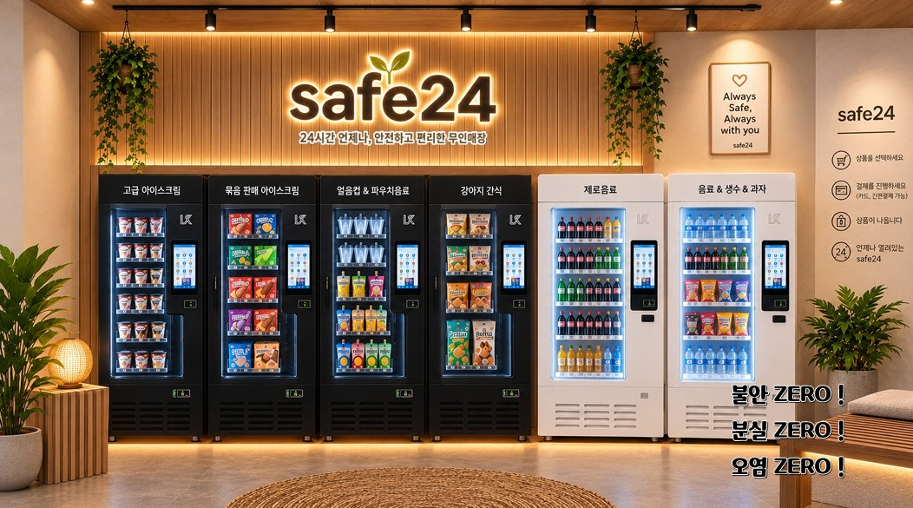
놓을 자리가 이미 있고 한 대로 먼저 확인해 보고 싶은 경우입니다. 기종과 품목만 정하면 되고 인테리어가 따로 들지 않습니다. 숫자를 보고 나서 대수를 늘리셔도 됩니다.
빈 점포나 기존 매장을 자판기로 채워 24시간 무인으로 돌립니다. 기기 구성·배치부터 원격 관리 방법까지 같이 잡아 드리고, 운영 중 손이 가는 부분도 계속 봐 드립니다.
상품을 열어 놓는 무인매장은 누구나 물건을 만질 수 있어 위생·도난·기물파손이 따라옵니다. 자판기로 매장을 구성하면 결제한 사람에게만 상품이 나가는 구조라 이 문제들이 대부분 정리됩니다.
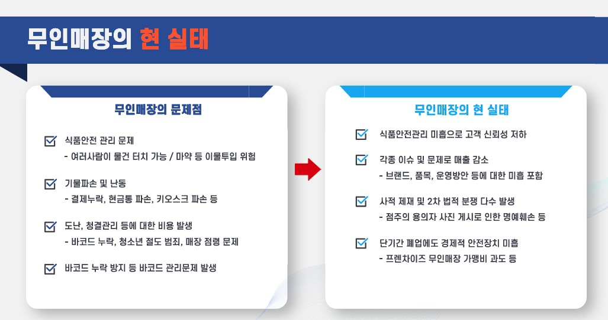
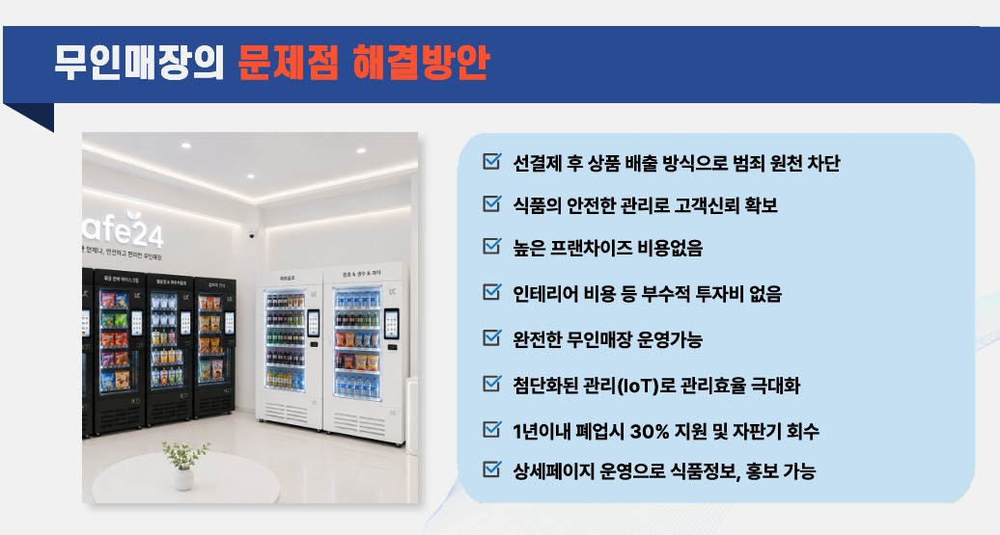
저희가 설치하는 무인매장 구성(SAFE24)은 네 가지를 기준으로 짜여 있습니다. IoT로 매장을 잠그고, 인건비를 뺀 만큼 가격을 낮추고, 온도·위생을 자동으로 관리하고, 재고·매출을 데이터로 봅니다.
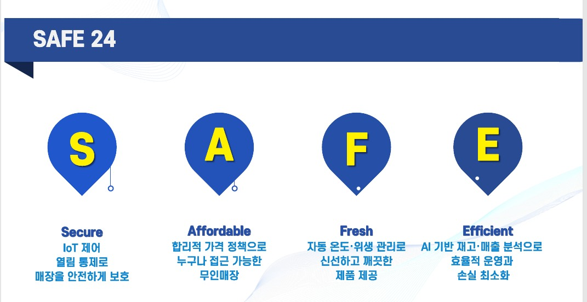
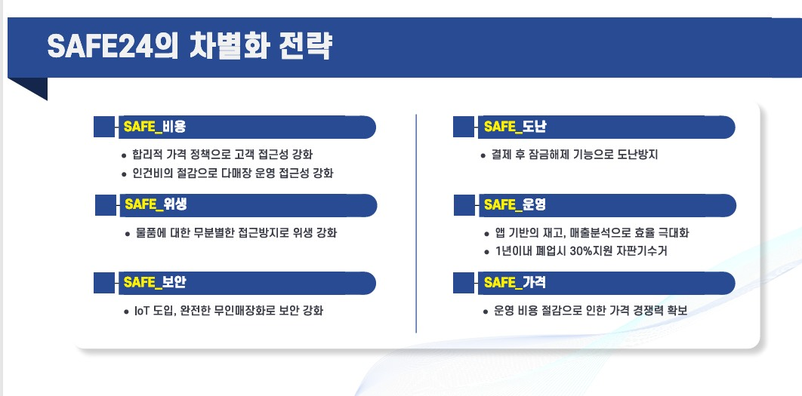
기기 자체가 매장 얼굴이 되기 때문에 인테리어에 크게 손대지 않아도 통일감이 나옵니다. 쓰던 매장을 그대로 살려 업종을 바꾸는 경우도 많습니다.
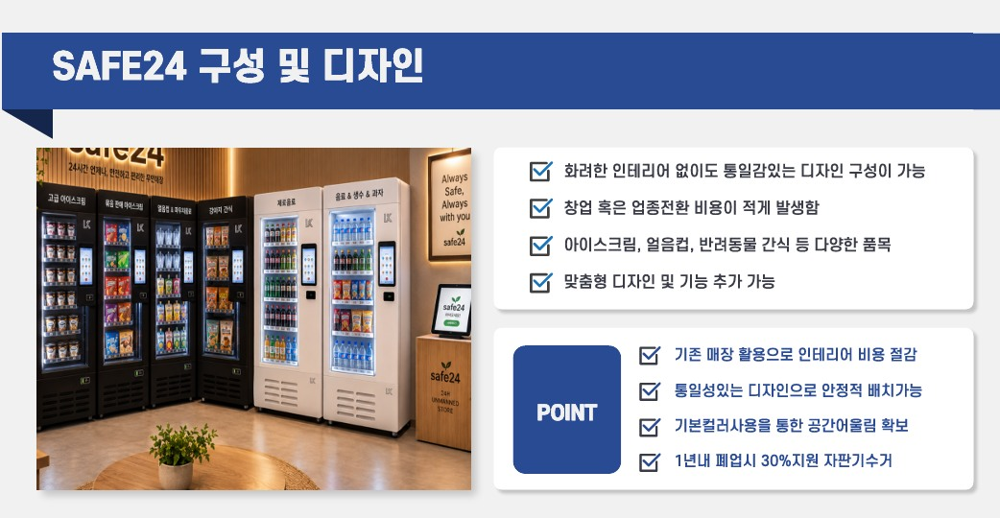
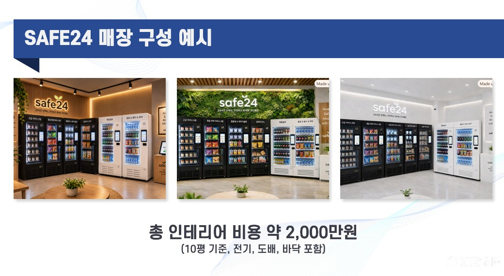
위 이미지의 인테리어 금액(10평 기준, 전기·도배·바닥 포함)과 1년 이내 폐업 시 30% 지원 · 자판기 회수 조건은 공급사 자료 기준입니다. 평수와 기존 매장 상태, 기기 구성에 따라 달라지므로 실제 금액과 적용 조건은 현장 확인 후 견적으로 정확히 안내드립니다.
아이스크림과 얼음컵·파우치음료처럼 무인카페 역할을 하는 품목부터 생수·제로음료, 과자·잡화, 라면·컵라면, 반려동물 간식까지 냉동·냉장·상온을 나눠 담습니다. 자리에 따라 팔리는 품목이 다르니 구성은 상담에서 같이 정합니다.
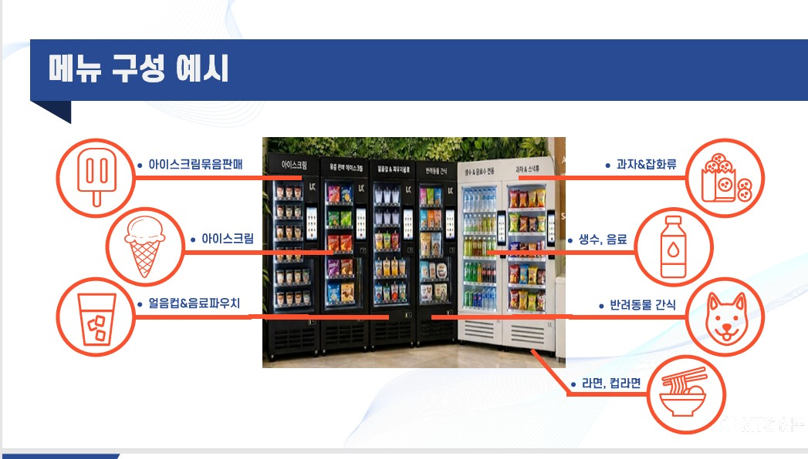
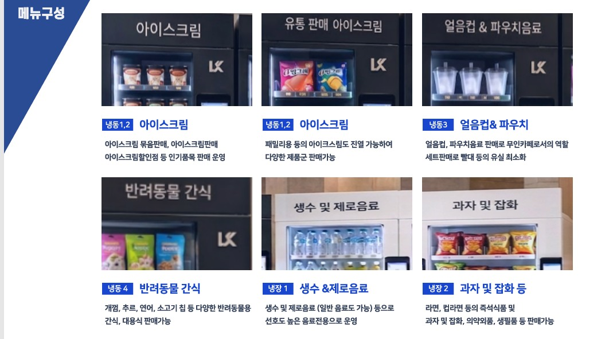
매장에 들어가는 냉동 블록형 쇼케이스의 규격과, 매장에 나가지 않고도 온도·재고·가격을 보는 원격 관리 화면입니다. 맥주 같은 성인 품목을 넣으실 경우 성인인증 기능을 추가할 수 있습니다.
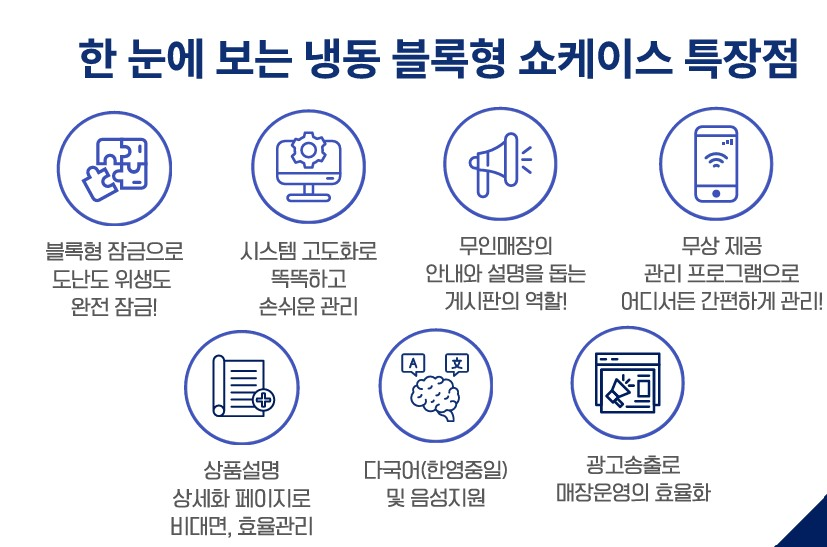
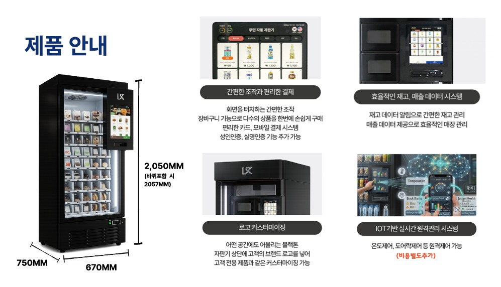
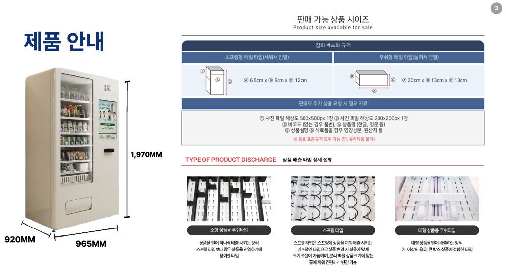
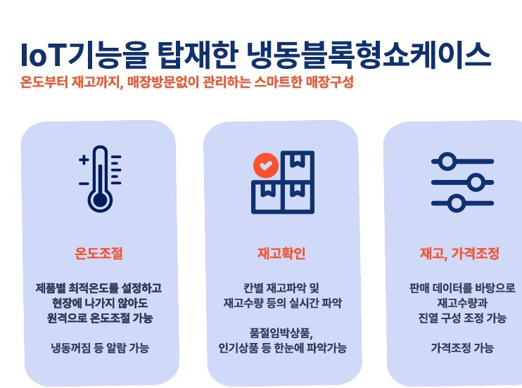
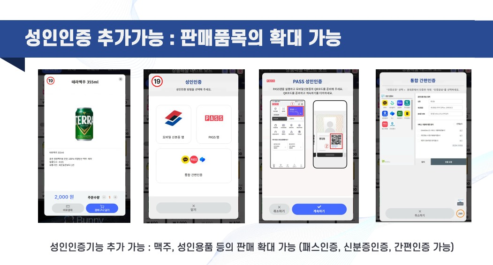
이미지는 제조사·공급사에서 제공한 제품 안내 자료이며 매장 구성 예시입니다. 실제 기기 사양과 매장 모습은 선택하신 기종·대수·현장 조건에 따라 달라집니다. IoT 원격관리는 비용이 별도로 붙는 항목입니다.
무인점포·무인편의점·무인문구점·무인아이스크림 할인점 창업을 함께 도와드립니다. 소자본창업·무인창업으로 시작해 부업이나 투잡으로 부수입을 만드는 사장님이 많습니다. 자판기 창업 설치비용, 수익 구조, 직접 운영과 위탁운영의 차이까지 부풀리지 않고 알려 드립니다.
추가 인력 없이 운영됩니다. 매출에서 인건비가 빠지지 않는 구조입니다.
구매가 부담되면 자판기 대여·렌탈·임대로 초기 비용을 낮춰 시작할 수 있습니다.
상주할 필요가 없어 본업과 병행할 수 있습니다. 보충 주기는 자리에 따라 다릅니다.
한 자리에서 검증되면 같은 방식으로 대수를 늘려 나가는 사장님이 많습니다.
구조 자체는 단순합니다. 판매금액 − 상품 원가 − 고정비(자리 사용료·전기·통신·카드수수료) = 수익. 아래에 사장님 상황의 숫자를 넣어 보시면 대략의 그림이 나옵니다.
MONTHLY (30일 기준)
입력하신 가정값으로 계산한 단순 참고치입니다. 카드 수수료·감가·보충 비용은 포함되어 있지 않으며, 실제 매출은 자리와 품목, 계절에 따라 크게 달라집니다.
어느 쪽이 맞는지는 사장님이 쓸 수 있는 시간과 자리 수에 따라 갈립니다.
| 구분 | 직접 운영 | 위탁 운영 |
|---|---|---|
| 상품 보충 | 사장님이 직접 | 위탁 업체가 담당 |
| 수익 | 마진을 전부 가져감 | 수수료 차감 후 정산 |
| 손이 가는 정도 | 주기적으로 방문 필요 | 거의 없음 |
| 이런 분께 | 가까운 자리, 시간 여유 있는 분 | 본업이 바쁜 분, 원거리 자리 |
위탁운영 조건(수수료율·정산 주기·보충 범위)은 자리와 대수에 따라 달라집니다. 상담 시 조건을 그대로 알려 드립니다.
가장 부담이 적은 시작입니다. 아는 매장 앞이나 아파트 단지처럼 검증하기 쉬운 자리에 한 대를 놓고, 숫자를 보고 나서 늘리는 방식입니다.
자판기 여러 대와 키오스크를 함께 놓아 24시간 무인으로 운영합니다. 무인아이스크림 할인점, 무인밀키트 매장 형태가 대표적입니다.
학교·학원가 문구점을 무인으로 바꾸는 사례가 늘고 있습니다. 야간·주말에도 학용품 자판기로 판매가 이어지고, 미술·사무용품까지 담을 수 있습니다.
생각하고 계신 자리가 있으면 그 자리를, 없으면 조건에 맞는 자리 찾는 방법부터 같이 봅니다.
구입 / 렌탈 / 임대 중 방식을 정하고, 품목 구성과 예상 비용을 견적으로 확인합니다.
설치비는 무료입니다. 기기 반입, 전원 연결, 결제 단말 등록, 초기 상품 진열까지 진행합니다.
매출·재고를 원격으로 보는 방법과 보충 주기 잡는 법을 안내해 드립니다.
초기 판매 데이터를 보고 품목을 조정합니다. 자리가 검증되면 대수를 늘리는 단계로 넘어갑니다.
매장 위치와 업종만 알려 주시면 됩니다. 자리에 맞는 기종과 품목, 예상 비용을 정리해서 연락드립니다. 상담과 입지 분석은 비용이 들지 않습니다.